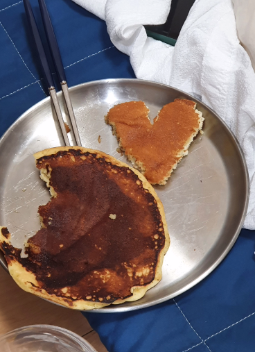
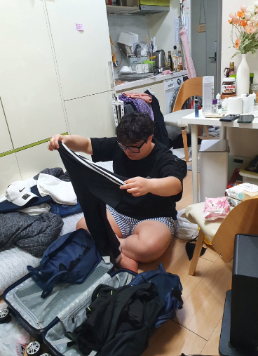
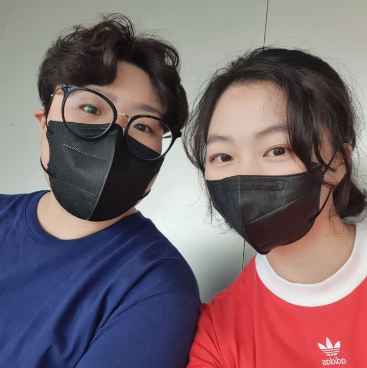
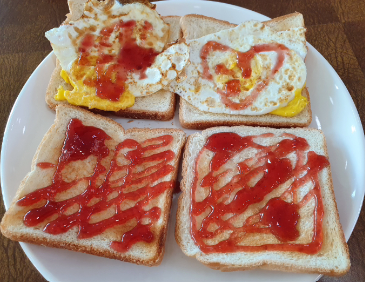
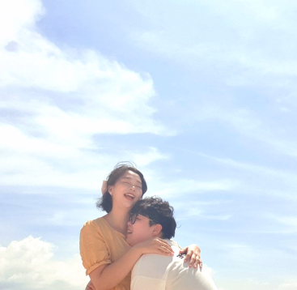
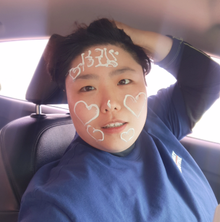
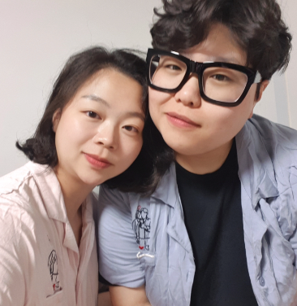
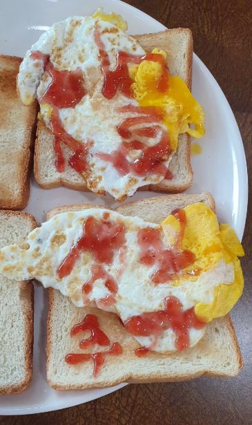
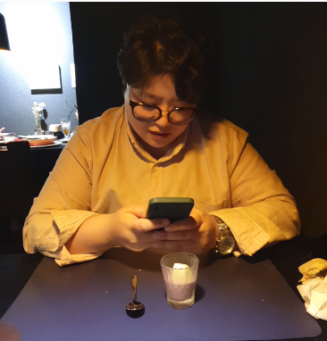

22.08.02

닝우가 나를 가지러 오는 차를 찍었다!
22.08.10
핫케이크를 좋아하는 닝우와 핫케이크를 먹었다!
22.08.14

사실 8월은 싸우느라 사진이 많지가 않다🥲
나는 가족 여행을 다녀왔고, 닝우도 음성에 다녀왔다
22.08.16

누가 이렇게 새침하지? 닝우
우리는 닝우 생일을 기념해서 제주도로 놀러가기로 하고 짐을 쌌다
22.08.17
삐걱삐걱 다투며 공항 도착! 나는 제주도 여행을 아주 기대하고 있었다
닝우 생일에 해주고 싶은 것이 많았기 때문이다
제주도에 도착해 처음으로 먹은 밥!
22.08.18

우리의 첫 숙소! 마당이 참 예뻤다
지금도 그리운 조식
별 게 들어가지도 않으면서 엄청 맛있었다
함덕 언덕에 올라가 꽃과 바다와 사진을 찍었다
날씨가 아주 좋았다!

배를 타고 우도로 들어가는 중
우리 행복해보여요

안녕 육지사람! 햄버거는 그저 그랬지만 기분은 참 좋았다

우도 바다에서도 노는 물개들
22.08.19

필수인 조식이다 우리가 제일 많이 먹었다
물놀이를 할 때면 선크림으로 낙서를 하는 닝우

멋진 함덕 바다에 들어간 멋진 닝우

여기서는 놀지 않고 사진만 찍었지만 참 멋있었다
22.08.20
머라구 닝우 생일이라구여? 생일 축하합니다~ 생일축하합니다~🎁
자기 생일에도 빼먹을 수 없는 조식!
레스토랑을 열심히 찾아 예약해서 닝우를 데려갔다
낯설어 하는 닝우

내가 두 달동안 준비한 결과물! 닝우가 깜짝 놀라고 아주 좋아해줬다
내가 준비한 것들을 좋아해줘서 고마워

우리 사랑해요

이호테우 앞에 있는 숙소였다
여기서 창밖을 바라본 게 정말 좋았다
생일 파티를 하고 바다로 산책을 나갔다
제주도에서 본 닝우는 함박 웃음을 짓고 있을 때가 많았다
네가 행복한 게 내가 행복한 거야😊
닝우도 똑같이 이렇게 말한 적이 있다 우린 마음이 똑같다
생일 축하해 내 자기야